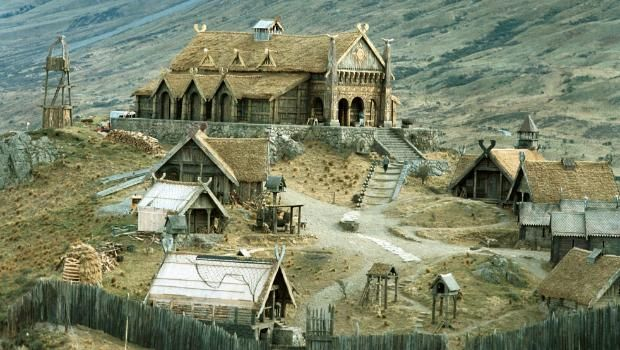
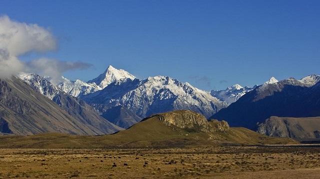
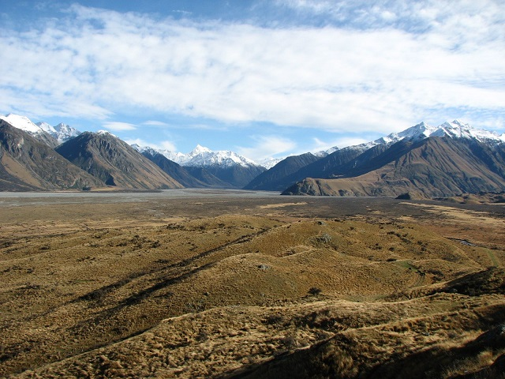

Edoras — a lovasnép aranyvárosa
A Fehér-hegység lábánál, zöldellő füves síkságok felett emelkedik Edoras, Rohan királyságának fővárosa. A város egy magas dombra épült, ahonnan messzire ellátni a végtelen pusztákon vágtató lovasok földjére
A Rohirrim otthona
Edoras a Rohirrim, vagyis a lovasnép szíve. Lakói kiváló harcosok és még kiválóbb lovasok. Számukra a ló nem csupán állat, hanem társ, barát és harci bajtárs. A síkságokon száguldó ménesek látványa Edoras mindennapjainak része.
Környezete
Edoras környezete a Fehér-hegység és a végtelen puszták között helyezkedik el. A város körül zöldellő füves síkságok és erdők terülnek el, amelyek a lovasok számára természetes védelmet nyújtanak.
Aranycsarnok — Meduseld
A város központjában áll a híres Meduseld, az Aranycsarnok. Tetőzete aranyszínben csillog a napfényben, falai fából és kőből épültek. Itt trónol Rohan királya, itt születnek döntések háborúról és békéről.
Élet Edorasban
Edorasban a kiváló lovasok és harcosok életükben a békességet és a szabadságot élvezik. A városban élők mindig készen állnak, hogy védelmet nyújtsanak a királyuknak és a nemzetségüknek. A városban élők színes, élénk életet élnek, amelyben az emberek egymásra épülnek.
Edoras a háború idején
A Gyűrű háborújában Edoras kulcsfontosságú szerepet játszik. Théoden király innen vezeti népét a Pelennor-mezei csatába, ahol Rohan lovasai döntő segítséget nyújtanak Gondor megsegítésében. Edoras így nemcsak egy város, hanem a bátorság és hűség jelképe Középföldén.